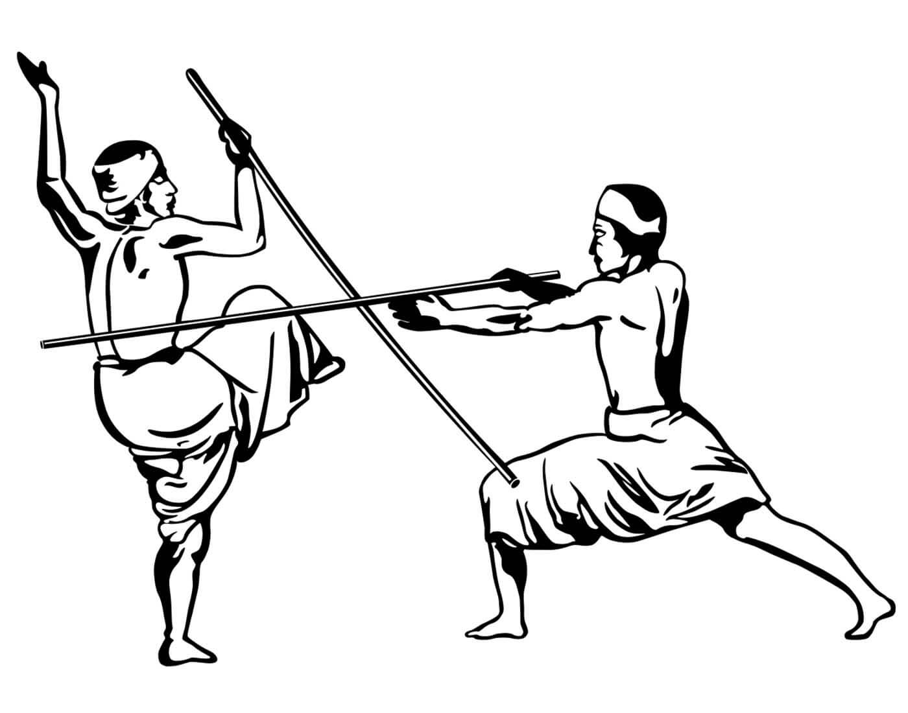

silambam
Silambam is a popular variant of martial arts which is performed with the aid of some specific weapons, primarily with bamboo sticks. It is widely performed in the regions of Tamil Nadu (India) which is also the birthplace of the game, where it emerged in around 1000 years BCE. The Tamil Sangam literature has the early records of Silambam.
It's an ancient weapon-based martial art. The word Silambam etymologically means "staff from the hills" with the word meaning of "Silam" being "hills" and "Kambu" being "staff or sticks". The game is usually played on an even hard surface where the players use a bamboo stick with its length equivalent to their heights. Overall, there are 16 forms of footwork present in this martial art.
Some of the most popular ways of Silambam Guru Vanakkam (an honourable act towards the Gurus and the audience), mentioned as follows -
Long Stick Guru Vanakkam - Here, the fighters use one-inch width bamboo stick as a weapon with a height up to their eyebrow level.
Double Short Stick - In this form, two different short sticks, each being 3 feet are used to hit or block the opponent.
Chopper Knife - The fighters in this form defend themselves with the aid of a chopper knife.
